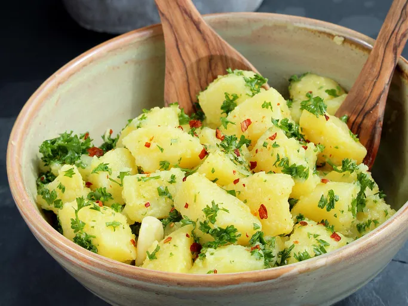

Patate Prezzemolate (Italian Vegan Potato Salad)

Description
Patate Prezzemolate, also known as Italian Vegan Potato Salad, is a delightful twist on the classic potato salad,
infused with the vibrant flavors of Italian cuisine. Boiled potatoes are the star of this dish, offering a
hearty and satisfying base. The potatoes are then tossed with a medley of fresh herbs like parsley, basil, and
oregano, which infuse the salad with an aromatic and earthy essence.
To maintain its vegan status, the salad typically incorporates a simple yet flavorful dressing made with extra
virgin olive oil, tangy lemon juice, and minced garlic. This dressing not only adds a burst of brightness but
also helps to marry the flavors together, creating a harmonious blend that tantalizes the taste buds.
Patate Prezzemolate is a versatile dish that can be served as a side dish alongside grilled vegetables or as a
main course on its own. Whether enjoyed warm or chilled, this Italian-inspired potato salad is sure to impress
with its vibrant flavors and wholesome ingredients. Buon appetito!
Ingredients
- 25 ounces Yukon Gold potatoes
- 1 tablespoon coarse sea salt
- 4 tablespoons extra-virgin olive oil, divided
- 1 tablespoon white wine vinegar
- 2 cloves garlic, peeled and slightly crushed
- 2 green onions (white part only), chopped
- ½ cup very finely chopped flat-leaf parsley
- salt and freshly ground black pepper to taste
- 1 teaspoon red pepper flakes (Optional)
Steps
- Combine potatoes and salt in a large pot filled with cold water. Bring to a boil. Cook until potatoes are
tender, but not mushy, about 10 minutes depending on size. Drain and set aside until cool enough to handle.~
- While potatoes are cooking, whisk 3 tablespoons olive oil and white wine vinegar together in a small bowl.
Add garlic and set aside.
-
Peel cooked and cooled potatoes and cut into 1-inch cubes. Combine potatoes, green onions, and parsley in a
bowl and lightly toss. Season with salt and pepper. Drizzle with olive oil mixture and lightly toss, taking
care not to break the potatoes.
-
Top with remaining 1 tablespoon olive oil and red pepper flakes right before serving.